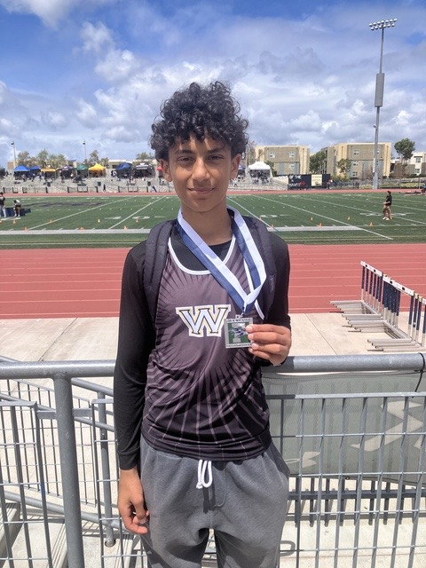
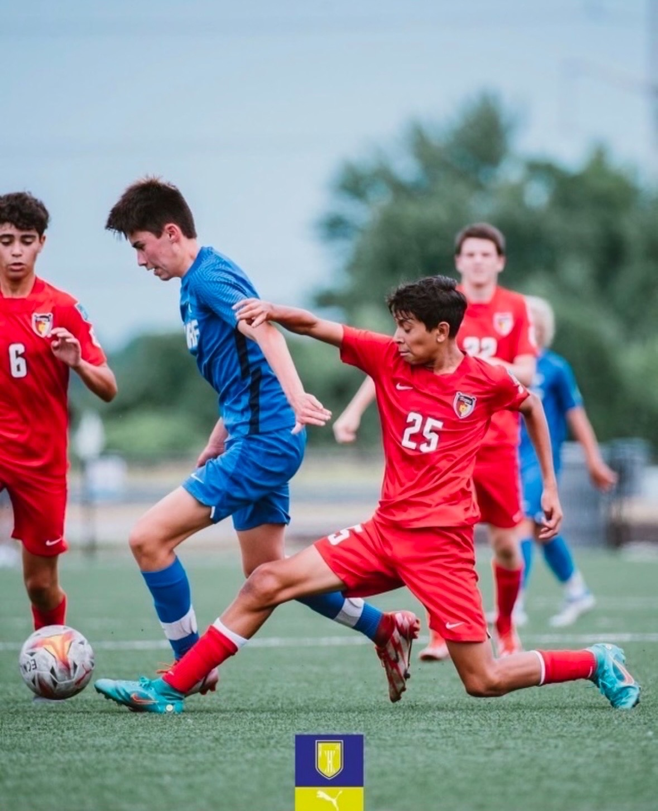
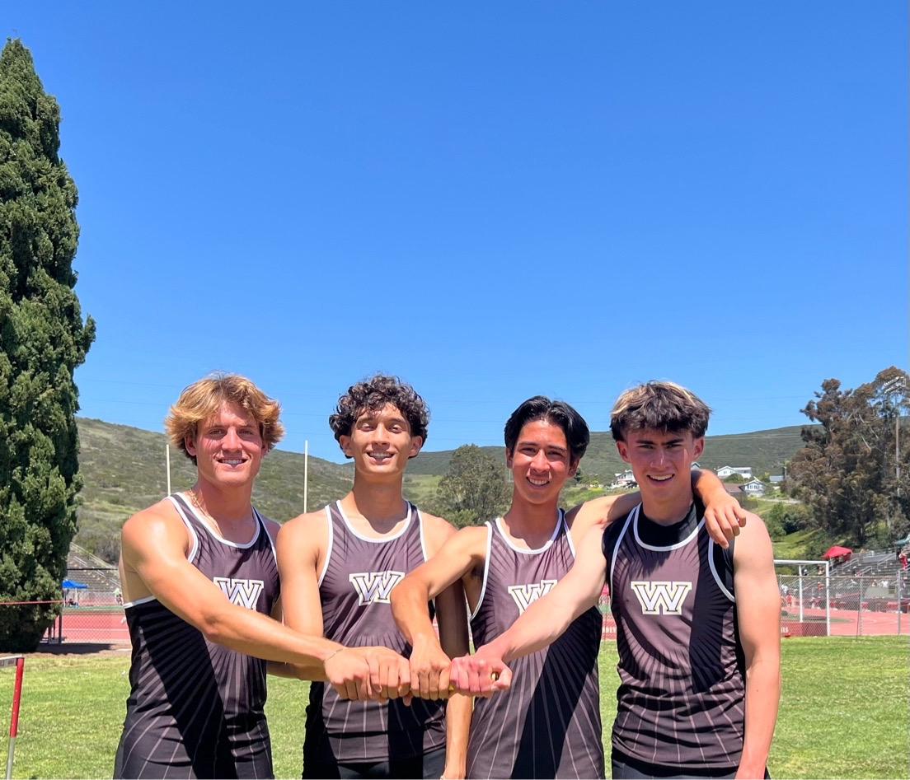

About Our Coaches

🏃 Mohammed Shanyour
- 🥈 Took 2nd place at Frosh/Soph Championship in the 110m Hurdles
- 🏅 Medaled and placed at the Willy Banks Track Meet
- ✅ Also qualified for Frosh/Soph Championships in the 300m Hurdles
Assistant Coach - Brady

⚽ Brady's Soccer Journey
- ⚽ Played soccer for 9 years + 2 years of high school soccer for Westview
- 🌍 Competed at the highest level including MLS NEXT (2 years) & ECNL (5 years)
- 🏆 Helped club team reach ECNL National Championship in St. Louis (2022)
- 🥇 Highest goal scorer on Westview HS team for the 2023–2024 season (0.7 goals/game)

🏃 Brady's Track Achievements
- 🥈 4x400m Relay team qualified and advanced to CIF D1 Sectionals (May 2025)
- 💨 Split a blazing 50.6s as the last leg of the 4x400m team
- 🏅 4x200m Relay team competed in the California Winter Championship in Arcadia (Feb 2025)
- 🚀 Set a PR and earned 2nd fastest 4x200m time in Westview HS history
- 🎽 Track athlete for 3 years – sprints including 100m, 200m, and 400m